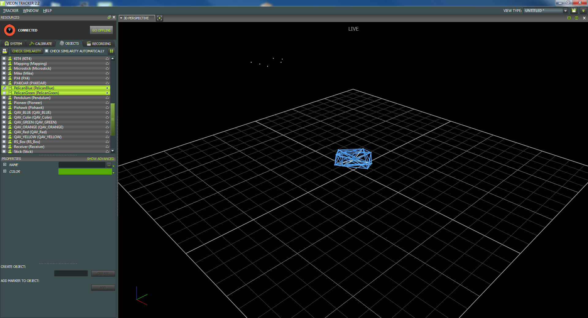

Vicon
Power on the Vicon Giganet box (far side of the arena)
Start tracker and wait for the cameras to enable (red glow).

Enable tracking of the Pelican used. Does Tracker show it being tracked?
Previous
Next
Cancel